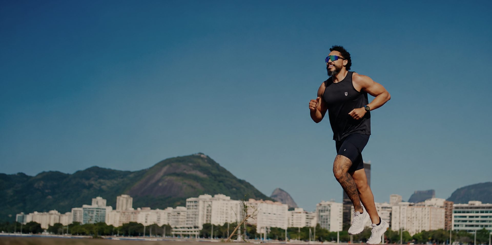
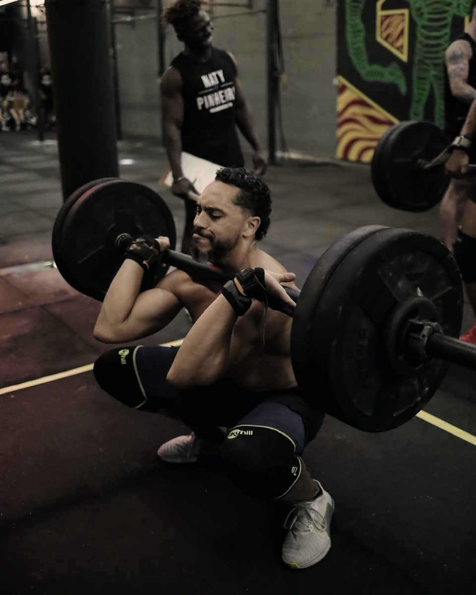
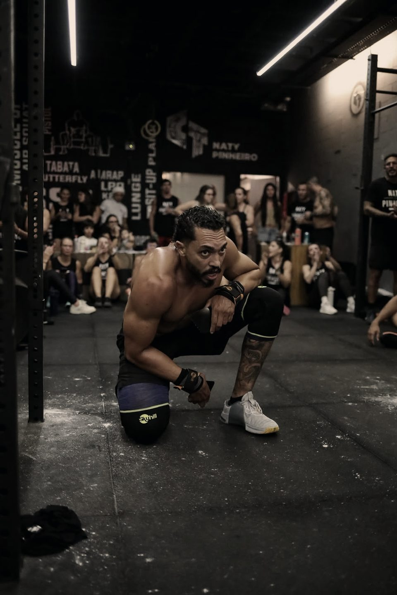

Equilíbrio. Performance. Qualidade de vida.
Treinamento personalizado para quem entende que saúde é o maior patrimônio. Atendimento presencial na Zona Sul do Rio de Janeiro e acompanhamento online.
Rodrigo Victor · CREF 041487-G/RJ
Método 4P
Um método.
Quatro pilares.
Resultados para a vida.
O Método 4P foi criado para quem busca muito mais do que treinar. É sobre transformar corpo, mente e rotina de forma inteligente e sustentável.
-
Propósito
Toda transformação começa por um motivo. Treinamos com um objetivo claro e real.
-
Performance
Mais força, mais mobilidade, mais disposição. Melhorar continuamente para viver melhor.
-
Proteção
Prevenir é evoluir. Cuidamos do seu corpo para hoje, amanhã e por toda a vida.
-
Permanência
Resultados que permanecem. Sem extremos, com consistência e hábitos reais.

Quem treina você
Movimento bem feito
é o que sustenta
o resultado.
Sou profissional de Educação Física formado em 2014, com especialização em Cinesiologia, Biomecânica e Treinamento Físico e certificação CrossFit Level 2. Atendo como personal trainer na Zona Sul do Rio de Janeiro, com alunos de todas as idades e níveis de condicionamento.
Minha base técnica está na análise do movimento e na prescrição individualizada. Na prática, isso aparece nas progressões: cada avanço é construído a partir de um fundamento que já está sólido — como no trabalho de salto, que evolui sem apoio antes de receber carga.
- Registro profissional
- CREF 041487-G/RJ
- Formação
- Educação Física, 2014
- Especialização
- Cinesiologia, Biomecânica e Treinamento Físico, 2015
- Certificação
- CrossFit Level 2
Real Cross · Botafogo
Um espaço construído
para caber em qualquer
nível físico.
Em 2017 fundei a Real Cross, box em Botafogo que trabalha com condicionamento, força e treino híbrido sob uma proposta simples: adaptar o CrossFit a qualquer nível físico, e não o contrário.
Essa mesma lógica orienta o atendimento individual. Já acompanhei alunos com TEA em treinos adaptados realizados no próprio espaço da Real Cross, e participei do Seminário Rio TEAMA 2019, na Cidade das Artes — um dos principais eventos sobre autismo do Rio.

Treinos
Treino onde você estiver.
Resultados onde você for.
Modalidades personalizadas para se encaixar na sua rotina e no seu estilo de vida. Todas seguem a mesma avaliação e o mesmo acompanhamento.
-
Presencial
Estrutura completa para treinos focados e eficientes, na Real Cross ou na sua academia.
-
Condomínio
Treino exclusivo na academia do seu prédio, aproveitando a estrutura que você já tem.
-
Residência
Conforto e privacidade para treinar no lugar que você escolher, com pouco ou nenhum equipamento.
-
Ar livre
Aterro, Lagoa, praia ou praça: a energia da cidade a favor do seu treino.
-
Online
Programa e acompanhamento à distância, para quem viaja ou treina fora do Rio.
Como começar
Do primeiro contato
ao primeiro treino.
-
1
Conversa inicial
Você me conta seu objetivo, sua rotina e seu histórico. Sem compromisso, pelo WhatsApp.
-
2
Avaliação e anamnese
Avaliação presencial com análise de movimento, histórico de saúde e definição de metas.
-
3
Programa individualizado
Montagem do plano, definição da modalidade, da frequência semanal e dos horários.
-
4
Treino e reavaliação
Acompanhamento contínuo, com ajustes de carga e progressão a cada ciclo.
Os planos variam conforme a modalidade e a frequência semanal. Os valores são apresentados na conversa inicial, antes de qualquer compromisso.
Treinar não é o objetivo.
É o meio.
Rodrigo Victor
Depoimentos
Histórias reais.
-
Espaço reservado para depoimento de aluno.
-
Espaço reservado para depoimento de aluno.
-
Espaço reservado para depoimento de aluno.
Sua melhor versão
começa com uma decisão.
Agende uma avaliação e descubra como o Método 4P pode se encaixar na sua rotina.
- (21) 99616-0489
- contato@rodrigovictor.com.br
- Zona Sul do Rio de Janeiro — RJ
- @coachrodrigovictor
Onde atendo
Atendimento presencial em Botafogo, Flamengo, Laranjeiras, Humaitá, Urca, Catete, Copacabana, Leme, Ipanema, Leblon, Jardim Botânico, Gávea e Lagoa. Para quem mora fora da Zona Sul ou viaja com frequência, o acompanhamento online cobre o restante.